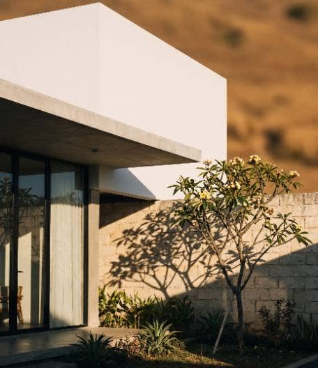

01
Minimalis
Efisien, bersih, fungsional.
Syarat wajib
- • Denah terbuka, sekat seminimal mungkin
- • Bentuk geometris tegas, fasad bersih
- • Bukaan kaca lebar dan lemari tanam
Penyesuaian Lombok
Bukaan sisi barat, utara, dan timur perlu peneduh. Atap dak miring minimal 2% dan wajib waterproofing.
Pilihan hunian: Esensial – Nyaman